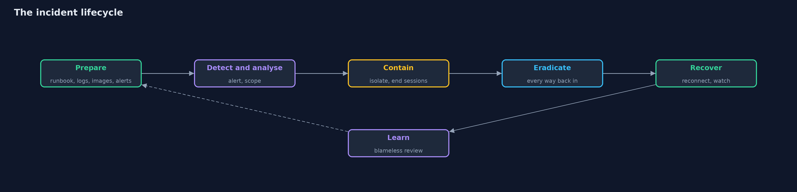
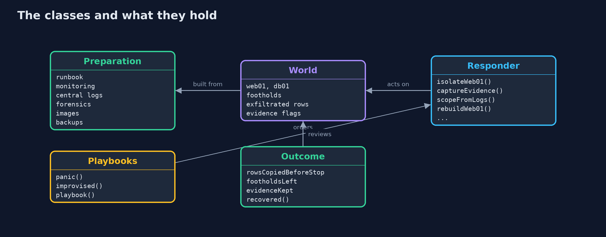
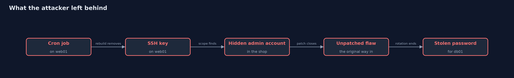
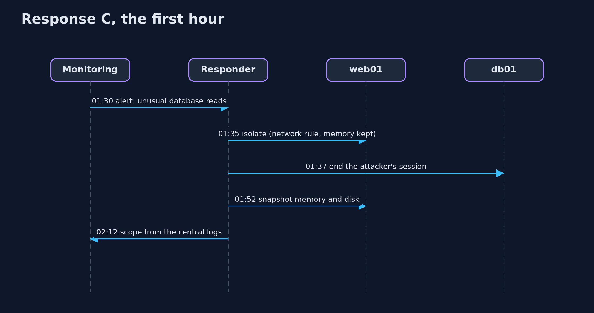

Incident Response: Prepare, Contain, Eradicate, Recover, Learn
src/main/java/com/jk/explore/security/ir/
├── IncidentDemo.java Runs the same incident three times in six numbered acts and prints exact, repeatable results
├── Outcome.java What a response achieved, in the terms of the post-incident review
├── Playbooks.java Three ways the same incident can go, from what was prepared and what is done first
├── Preparation.java What the organisation did <em>before</em> the incident
├── Responder.java The actions an incident responder can take, each with a duration and a real effect on the {@link World}
└── World.java The shop's systems during the incident, and the attacker's ground truth
The same breach ends very differently depending on what was prepared (alerts, central logs, snapshots, images) and on the order of the response: contain without destroying evidence, scope from logs, close every way back in, rebuild from a known-good image, and watch, because an attacker with one way back in will use it.
At 01:00 an attacker gets into the shop's web server through a flaw in the application. They read the database password from its configuration, from 01:20 copy the customer table at a thousand rows a minute (50,000 customers in all), and at 01:40 leave three ways back in: a cron job and an SSH key on the web server, and a hidden admin account in the shop's own admin panel. This project replays that same incident three times, with different preparation and a different response, and compares the outcomes.
The structure is the NIST SP 800-61 incident lifecycle, which this project makes concrete: - Prepare: six things decided before anything happens (runbook, alert on unusual database reads, logs kept centrally for at least a week, a way to snapshot memory and disk, a known-good image to rebuild from, tested backups). With none of them the breach is found by a customer after three days; with an alert it is found in 30 minutes. - Detect and analyse: scope the incident from logs. Without logs that reach back to the start, nobody knows what the attacker did or which accounts they created. - Contain: stop the damage. Isolate the host from the network (which keeps its memory) rather than rebooting it (which destroys memory evidence and leaves the persistence). - Eradicate: remove every way back in: rotate the stolen password, disable the hidden account, patch the flaw, and rebuild the host from a known-good image instead of cleaning it by hand. - Recover: reconnect, and watch. An attacker with one remaining foothold comes back within hours. - Learn: the review table compares the three runs on time to detect, data lost, evidence, root cause, outage and recurrence.
Maps to: NIST SP 800-61 (Computer Security Incident Handling Guide) · NIST CSF Respond and Recover · OWASP Top 10 (2025) A09 Security Logging and Alerting Failures · ISO/IEC 27035 · SANS PICERL (Preparation, Identification, Containment, Eradication, Recovery, Lessons learned).
The idea in everyday terms
A house fire. If there are smoke alarms, an exit plan and a fire extinguisher in the kitchen, the fire is small and the family is outside in a minute. If someone turns on the lights and runs around opening windows, they feed the fire. And when the firemen leave, someone must check the walls, because a smouldering beam restarts the fire at night.
The scenario
The shop's web server (web01) and database (db01), one attacker with a scripted behaviour, and three responses to the same incident. The simulation counts minutes from 01:00 on day 0; each response action has a duration and an effect on the systems, and the engine records a timeline and a review.
Run
./gradlew run
The demo tells the story in 6 acts, each printing exact numbers that the tests check:
| Act | What it shows |
|---|---|
| 1. The attack | 01:00 entry through a flaw, 01:05 the database password, 01:20 copying starts at 1000 rows a minute out of 50000, 01:40 three ways back in. |
| 2. What was prepared | Nothing: 0 of 6; an alert only: 1 of 6; everything: 6 of 6. |
| 3. Response A: nothing prepared, and a panicked fix | A customer finds the breach on day 3; the fix is a reboot and a changed password, and two hours after going back online the attacker returns through the cron job. |
| 4. Response B: an alert, but no plan | The alert comes at 01:30 and isolation at 01:35 stops the copying at 15000 rows; but a hand rebuild, no scope, an unrotated password and an unpatched flaw leave three ways in, and the attacker returns. |
| 5. Response C: the playbook | Isolate and kill sessions (15000 rows), capture evidence, scope from logs, rotate the password, disable svc-backup, patch, rebuild from the image, reconnect, and two quiet hours. |
| 6. The review | A was found after 3 days with all data copied and 4 ways in open; B and C stopped the copying at 15000 rows, but only C kept evidence, knows the root cause, left no way in, and recovered. |
Test
./gradlew test
15 tests in DemoRunsTest, IncidentTest. The attacker is scripted and the clock is simulated, so the demo prints the same text on every run.
What the simulation got right, and what it left out
The world is a small state machine: two hosts, the attacker's three footholds and a copying loop, with a simulated clock. Each responder action takes the time it would take and changes exactly what it would change. The attacker is scripted and fixed, so a difference in outcome is always a difference in preparation or response. It is a teaching model of the lifecycle, not a forensics tool.
Technologies and versions
Every version below is pinned in the project's build files and was the latest stable release when the project was built.
| Technology | Version | Used for |
|---|---|---|
| Java | 25 | the language and runtime; a Gradle toolchain finds or downloads the JDK |
| Gradle | 9.8.1 (wrapper) | build and run; nothing to install, the wrapper downloads it |
| org.junit.jupiter:junit-jupiter | 6.1.3, set by junit-bom | JUnit 5: the tests (tests only) |
| org.junit.platform:junit-platform-launcher | 6.1.3, set by junit-bom | JUnit platform launcher, which Gradle needs to run the tests (tests only) |
| videokit | repository tool (tools/videokit) |
the narrated video and animation: Piper en_US-amy-medium, speed 0.8, longer pauses (the amy-slow voice) |
Learning Material
| Document | What it is for |
|---|---|
| Problem statement | the situation and what the project must show |
| Prerequisites | what you need to know first |
| Incident Response: Prepare, Contain, Eradicate, Recover, Learn, explained | the acts in prose |
| Session guide | a one-hour lesson with exercises |
| Animated walkthrough | the acts step by step, narrated |
| Threat model | what is protected, who could harm it, and how, using STRIDE |
| Spec | what this project must be true of |
| Expected output | the golden demo output every test and every port checks against |
The idea in one picture
After the review, preparation improves, and the cycle starts again.

Where each piece sits
A preparation sets the world's detection time; a responder acts on the world; the outcome reviews it.

How the data moves
Eradication has to remove all of them; the review counts what is left.

Who calls whom, in order

Video
video/incident-response-explained.mp4 (with .m4a audio and .srt subtitles) is built by video/build_video.sh. Rendered media is not committed.
What it costs
- Preparation costs money before any benefit is visible. Central logs, retention, images and monitoring are the first things cut and the first things missed.
- Containment hurts the business. Isolating the web server takes the shop offline; the playbook decides who may make that call, quickly.
- Evidence and speed pull against each other. Capturing memory takes minutes during which the attacker may still be active; isolating by network keeps both.
- Rebuilding is slower than cleaning, and safer. You cannot prove a cleaned host is clean; an image can be proven.
- Legal and communication duties (breach notification to authorities and customers within set times) start when the breach is confirmed; the runbook must name who decides.
When this is too much
Do not write a 100-page plan nobody reads. A runbook that fits on a few pages, with names and phone numbers, practised once a year in a tabletop exercise, beats a large plan. Do not rebuild everything on suspicion: scope first, so that the response matches the incident.
Where you have already met this
- "Turn it off and on again", which is exactly wrong in an incident.
- Breach notifications that say the attackers were inside "for several months".
- Post-incident reviews and "blameless postmortems".
- The NIST incident response lifecycle diagram, and tabletop exercises.
Where this sits
This project is in detection-and-response and follows detecting-attacks: the alert there is the starting gun here. It relies on security-logging for the evidence, and on the images and backups of the platform projects.